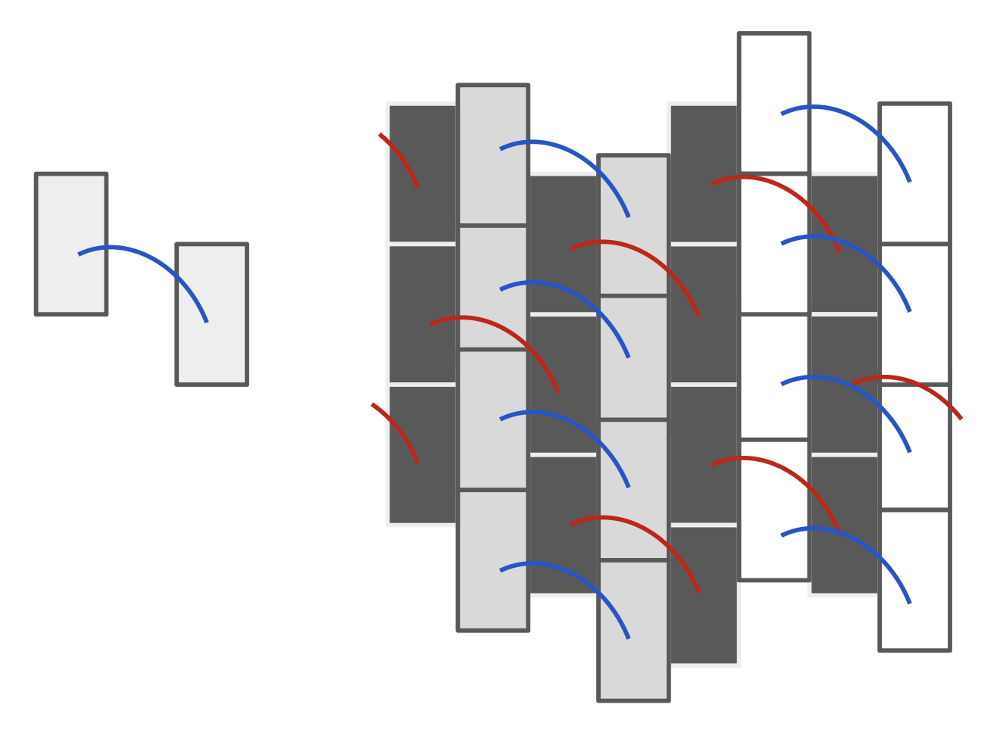
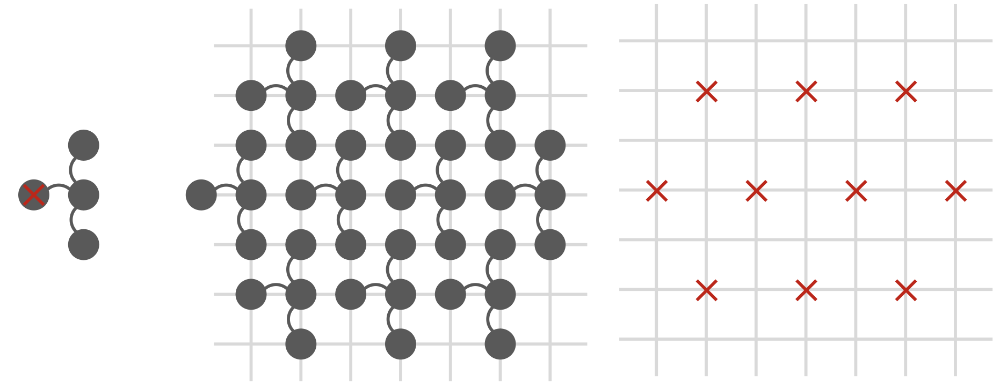

A remark states that the paper's results on translational tilings by axis-parallel polygonal sets have been formalized in Lean 4.
Abstract
The periodic tiling conjecture asserts that if a bounded set $Ω\subset \mathbb R^d$ of finite measure tiles $\mathbb R^d$ by translations, then it admits at least one fully periodic tiling. This conjecture was proved to hold in $\mathbb R$ by Lagarias and Wang, and was recently disproved by Greenfeld and Tao in sufficiently high dimensions. Its discrete analogue in $\mathbb Z^2$ was proved by Bhattacharya, whereas the conjecture in $\mathbb R^2$ remains open. In this paper, we analyze the structure of tilings by axis-parallel polygonal sets: bounded open sets in $\mathbb R^2$ whose boundary is a finite union of line segments parallel to the axes. We prove that every such tiling that is topologically minimal is weakly periodic. Moreover, we show that if an axis-parallel polygonal set $Ω$ tiles $\mathbb{R}^2$ then it admits a quasi-periodic tiling (i.e., a finite union of translated lattices). The proofs combine geometric decompositions of tilings with rational approximation and discrete tiling theory. As a consequence, we obtain that the translational tiling problem for axis-parallel polygonal sets with real algebraic vertex coordinates is decidable.
Problem
The periodic tiling conjecture is open in the plane. The paper studies the structure of translational tilings of the plane by axis-parallel polygonal sets: bounded regular open sets whose boundaries consist of finitely many axis-parallel segments.
Approach
The proofs combine geometric decompositions of tilings into 'tectonic plates' (earthquake decompositions) with rational approximation of vertex and translation coordinates. These are linked to the discrete tiling theory of Z^2, building on the Greenfeld–Tao structure theory. A new discrete periodicity result for tilings of Z^2 serves as the combinatorial core. The results are reported as formalized in Lean 4.

Figure 6.1 . On the left is a tile \Omega . On the right, a tiling T by \Omega , where the different colors indicate different \sim_{\Omega,\Uparrow} -equivalence classes.

Figure 3.1 . On the left is a discrete tile F\subseteq\mathbb{Z}^{2} , on the right (in red) is part of a tiling A\in\operatorname{Tile}(F;\mathbb{Z}^{2}) , and on the middle is F\oplus A .
Results
Every topologically minimal tiling by an axis-parallel polygonal set is weakly periodic. Every such tile admits a quasi-periodic tiling (a finite union of translated lattices). As a consequence, translational tiling is decidable for axis-parallel polygonal sets with real algebraic vertex coordinates.